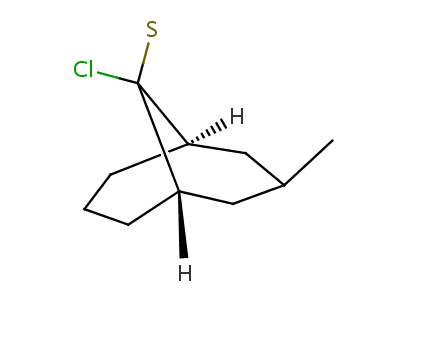

E.g. aromatic Boron is written with lowercase letter: b1ccccc1.
The relative stereoconfiguration is stored as "r". The absolute stereoconfiguration is the default, which is not marked. (Absolute stereoconfiguration known also as "Chiral flag" in MDL molfiles. )
The following stereochemical group types are stored:
- Absolute stereo group type.
a:<atomindex>,<atomindex>... - OR stereo group type.
o<group>:<atomindex>,< atomindex>... - AND stereo group type.
&<group>:<atomindex>,< atomindex>...
Atom labels / aliases are written between "$" characters
each label is separated by ";" characters.
Atom values are written after "$_AV:" separated by
semicolon characters and closed with "$" tag.
Atom indexes relating to wiggly bonds are written after "w:"
followed by a dot character and the wiggly bond index.
The wiggly bonds are separated by commas.
If atomic coordinates are also exported, then UP bonds are written
after "wU:"
DOWN bonds are written after "wD:" in a similar way to
wiggly bond export.
Bond indexes of the double bonds in SSSR are written.
The bond stereo information is generated as the following:
the double bond has the representation a1-a2=a3-a4, where
- a1 is the smallest atom index of the generated smiles connected to a2
- a2 is the double bond smaller atom index in the generated smiles
- a3 is the double bond larger atom index in the generated smiles
- a4 is the smallest atom index of the generated smiles connected to a3
the TRANS double bond indexes are written after "t:",
the double bond indexes with UNSPEC flag are written after "u:".
- Connected groups are separated by ",".
- A connected group is a "." separated list of fragment indices.
Example: "f:0.1,5.6"
Atom indexes with local ODD parity are written after "@:", while atom indexes with local EVEN parity are written after "@@:" characters separated by commas.
For each ligand connected to non-bridgehead atoms of bicyclo-alkanes, if they are in a syn/anti or endo/exo position (ligand is not in the plane of the bridge to which it is connected), their relative position in the ring system is stored by their position in relation to the bridges to which they are not connected. Bridges are identified by the indexes of the contained atoms: higher bridge is the one with the highest atom index, the other is the lower bridge. The ligand's position can be:
- towards higher bridge (THB), if it lies towards the higher bridge regarding the plane of the connected bridge
- towards lower bridge (TLB), if it lies towards the lower bridge regarding the plane of the connected bridge
- towards either bridge (TEB), if its position is not determined, it can lie towards both of the bridges (it is connected by a wiggly bond)
- "THB", followed by ":", than for each THB ligand as follows:
- index of the ligand atom for which bicyclo stereo description is stored, followed by ":"
- index of the ring atom in the bicyclo-alkane to which the ligand is connected (connection atom), followed by ":"
- list of indexes in the lower bridge, separated by "." and followed by ":"
- list of indexes in the higher bridge, separated by "."
- stereo description of separate ligands are separated by ","
- the same lists are present for THB and TEB atoms, separated by ",".
Examples:
| [H][C@]12CCC[C@]([H])(CC(C)C1)C2(S)Cl |r,TLB:13:11:2.4.3:7.10.8,THB:12:11:2.4.3:7.10.8,9:8:11:2.4.3| |  |
| [H][C@]12COC[C@]([H])(C[C@@H](CCCC)C1)[C@@]2(Cl)C1CCCC1 |r,TLB:15:14:2.4.3:7.13.8,THB:16:14:2.4.3:7.13.8,9:8:14:2.4.3| |
Atom indexes with
- divalent radical center are written after "^2:",
- divalent singlet radical center are written after "^3:",
- divalent triplet radical center are written after "^4:",
- trivalent radical center are written after "^5:",
The indexes of the atoms having bond connected lone electron pairs are written after "LP:".
The indexes of the atoms followed by a colon character and the number of
explicit lone electron pairs are written after
"lp:".
(See live example.)
Example: "LP:1,lp:0:1,2:2"
The multicenter atom indexes written after "m:" followed by a colon character and the indexes of the atoms which forms the given SGroup separated by ".". The SGroups are separated by commas.
Atom indexes relating to coordinate bond indexes are written after
"C:" followed by a dot character
and the coordinate bond index.
The coordinate bonds are separated by commas.
In the smiles part of cxsmiles the atom-to-atom coordinate bonds are
represented by single bonds, which are corrected according to the
C information at the extended part.
The link node atom indexes are written after "LN:" followed by a colon character, the minimum repetitions, maximum repetitions, the node first and second outer atom indexes separated by ".". If the link node has only two connections, then the first and second outer atom indexes are obvious, so they are omitted. The link nodes separated by commas.
Example: "LN:1:1.5.3.0,6:1.2.7.5,9:1.10.10.8"
The atomic coordinates are written between parentheses.
Each atomic coordinate triplet (x, y, z) is separated by semicolon, and the
x y z coordinates are separated by commas. Zero coordinates are omitted.
Note: The CIS/TRANS information is redundant in this case. It is specified
in the SMILES string and also in the atomic coordinates. The
atomic coordinates has priority over the SMILES string.
Atomic indexes in the data sgroup are written after
"SgD:" followed by
field name, data value, query operator, unit, tag
and coordinates in parenthesis if necessary, separated by
colon characters. If atomic coordinates are exported (with
c option) (-1) is used in the coordinate field
for data sgroup attached to the atoms.
Example: "SgD:3,2,1,0:name:data:like:unit:t:(-1)"
The R-group attachment point is written explicitly as ANY atom into the SMILES
string.
The order of attachment point is written as alias string
(see above) after "_AP" separated by semicolon characters.
Before version 5.4 only two attachment point type was supported, the
attachment point was not exported to the SMILES string explicitly.
In the extended part the atomic indexes of the attachment points written
after "AP_x:" format was used, where x denoted
attachment type 1, 2 or 3 for attachment points 1, 2 or both.
Example: "C[C@H](N*)C(*)=O |$;;;_AP1;;_AP2;$|", before version 5.4: "C[C@H]([NH])[C]=O |AP_1:2,AP_2:3|"
S-group attachment point informations are not handled by cxsmiles or cxsmarts.
Rgroup information can be exported to extended cxsmiles/cxsmarts. Rgroups in the molecule is exported to ANY atom in the SMILES part, they are described in the alias part as "_Rn". Rgroup descriptions (molecules) are enumerated also in the extended part after "RG" followed by a colon character.
- The Rgroup number is written after "_R" followed by "=" (eg. _R1=)
- The Rgroup description is written as cxsmiles/cxsmarts in braces "{}"
- Members of the same Rgroup are seperated by commas
- Different Rgroups are seperated by commas.
- C1O[*]CO[*]1 |$;;_R2;;;_R1$,RG:_R1={C},{N},_R2={C},{N}|
- Cl[*](Br)I |$;_R1;;$,RG:_R1={*CCCC(C*)CC* |$_AP3;;;;;;_AP2;;;_AP1$|},{*CCCN(C*)CC* |$_AP3;;;;;;_AP2;;;_AP1$|},LO:1:0.2.3|
Ligand order information can be exported to extended cxsmiles/cxsmarts after "LO" followed by a colon character.
- First the center atom's index is exported followed by a colon
- After that all atom's indexes connected to the central atom is written in ligand order sperated by "."
- The different ligand order informations are seperated by comma.
- Eg: LO:centerIdx1:idx1.idx2.idx3,centerIdx2:idx1.idx2...
- Cl[*](Br)I |$;_R1;;$,RG:_R1={*CCCC(C*)CC* |$_AP3;;;;;;_AP2;;;_AP1$|},{*CCCN(C*)CC* |$_AP3;;;;;;_AP2;;;_AP1$|},LO:1:0.2.3|
Pseudo atoms can be exported to extended cxsmiles/cxsmarts.
They are described in the alias part as "pseudo_p",
where pseudo is the value of the pseudo atom.
Example:
CCCC* |$;;;;pseudo_p$| 
Special atoms AH, QH, M, MH, X, XH and Pol, are exported to cxsmiles/cxsmarts as pseudo atoms, i.e. AH_p, QH_p, M_p, MH_p, X_p, XH_p, and Pol_p, respecively. Special atoms Q and star are exported as Q_e and star_e, respectively. Special atom A can be handled by SMILES export, therefore it is not written to the alias part of the cxsmiles/cxsmarts.
Examples:
*C(*)CC(*)CC(*)* |$;;Pol_p;;;Q_e;;;star_e;M_p$| 
*C(*)CC(*)CC(*)* |$Q_e;;AH_p;;;X_p;;;QH_p;XH_p$|